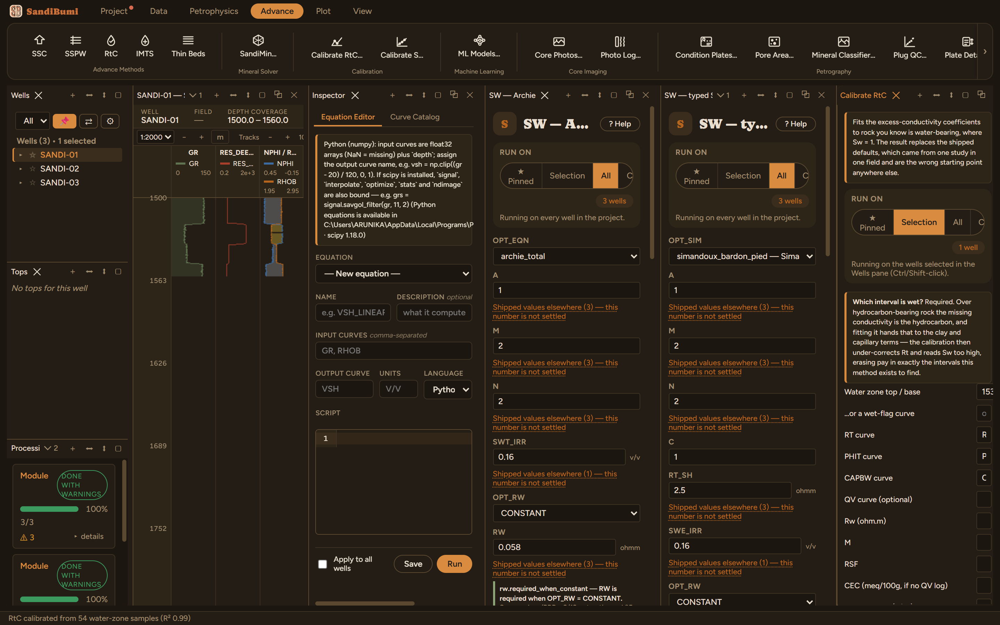
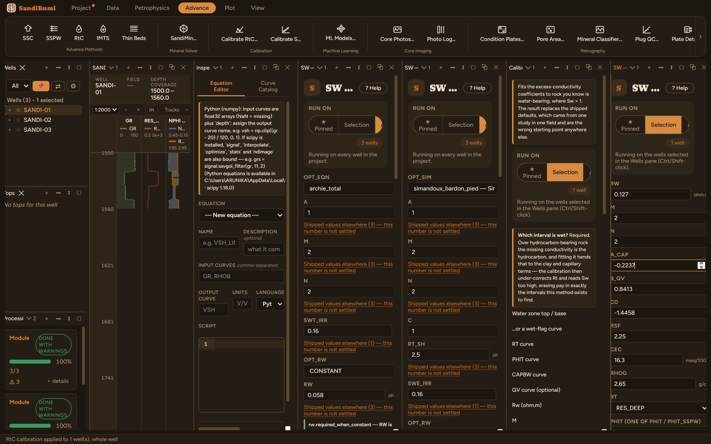

RtC is SandiBumi's own method for low-resistivity low-contrast pay: it estimates the conductivity that clay chemistry and capillary-bound water add, removes it from the measured conductivity, and applies Archie to the remainder. Its coefficients never ship — a calibration from one field is silently wrong in another — so the workflow always starts in Advance ▸ Calibrate RtC…, and this chapter walks the whole chain including the two refusals it met, because they are the method working.
The calibration regresses the excess conductivity over rock you declare to be water-bearing. Declared here: 1535–1550 m on SANDI-01 — the water sand below the resistivity collapse — with the fit scoped to that one well (Ctrl-click it in the Wells pane), because the same depth window crosses into the gas sand on the shifted neighbouring wells.

The pane reports 54 usable samples and 45 excluded because Rt sat above the clean-water baseline. That split is this dataset confessing: these synthetic sands are clean, the excess conductivity is measurement noise, and the fit is fitting the positive half of that noise. On real LRLC rock the usable count dominates and the coefficients mean something; here they do not, and the next step proved it.
Apply wrote the coefficients (and the held-fixed RSF with them) into SANDI-01's zone parameters in one step. But the fitted intercept C0 = −1.446 sits outside the module's declared range for the parameter, and the run refused it — from the typed argument and from the zone override: "parameter value(s) outside the module's declared range: C0 = −1.4458 in zone '*' (valid −1 to 1)". On this dataset sw_rtc therefore does not run, and that is the honest outcome: a clean sand gave the calibration nothing real to fit, the fit degenerated, and the module's own range gate caught the degenerate intercept before it could compute a plausible-looking saturation.

What to take away: run RtC where the problem exists — rock whose resistivity reads low against its saturation. Where Archie already explains the water zone, the calibration will tell you so, twice.